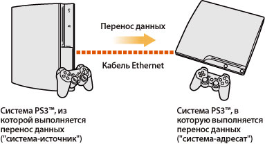
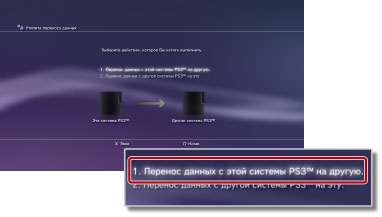
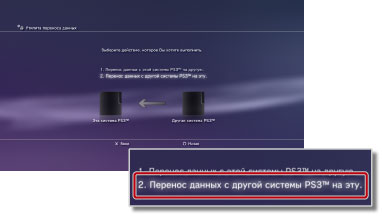

Настройки > Настройки системы > Утилита переноса данных
Утилита переноса данных
Данные, сохраненные на жестком диске системы PS3™, можно перенести (скопировать или переместить) на жесткий диск другой системы PS3™ с помощью кабеля Ethernet.

Примечания
- При выполнении этой операции все данные, сохраненные в системе PS3™, в которую вы переносите данные ("система-адресат") будут удалены.
- Удаленные данные восстановить невозможно - будьте внимательны, чтобы случайно не удалить что-нибудь важное. За потерю или повреждение данных несет ответственность пользователь.
- Данные некоторых типов перенести невозможно. Выберите здесь для получения более подробной информации.
Подготовка системы к переносу данных
Перед тем, как начать перенос данных, выполните следующие действия.
1. |
Обновите системное программное обеспечение обеих систем PS3™ до последней версии. |
|---|---|
2. |
Подготовьте систему PS3™, с которой будете переносить данные ("система-источник"). |
- Создайте учетную запись PlayStation®Network, если у вас ее еще нет.
- - Выберите
 (PlayStation®Network) >
(PlayStation®Network) >  (Зарегистрироваться в PlayStation®Network) и создайте учетную запись, следуя инструкциям на экране.
(Зарегистрироваться в PlayStation®Network) и создайте учетную запись, следуя инструкциям на экране. - Деактивируйте систему PS3™, если данные, предназначенные для переноса, содержат материалы, приобретенные в PlayStation®Store.
- - Выберите (PlayStation®Network) >
 (Управление учетной записью) >
(Управление учетной записью) >  (Активация системы).
(Активация системы). - Выполните резервное копирование или синхронизацию данных о призах в системе PS3™ с сервером PlayStation®Network, если хотите перенести данные о призах.
- - Войдите в PlayStation®Network и выберите
 (Игра) >
(Игра) >  (Коллекция призов).
(Коллекция призов). - Войдите в
 (PlayStation®Home) перед переносом данных, если вы получали в награду предметы для использования в (PlayStation®Home) на системе-источнике.
(PlayStation®Home) перед переносом данных, если вы получали в награду предметы для использования в (PlayStation®Home) на системе-источнике. - Выполните резервное копирование данных своего профиля и эпизодов, созданных вами в LittleBigPlanet™ в файл сохранения игры. Потом вы сможете использовать резервную копию данных в игре LittleBigPlanet™ на системе-адресате PS3™.
Примечание
При переносе данных без создания учетной записи PlayStation®Network действуют следующие ограничения.
- Возможно, вы не сможете использовать сохраненные данные на системе-адресате PS3™.
- Возможно, вы больше не сможете получать призы, используя перенесенные сохраненные данные.
- Сведения о призах не переносятся.
Перенос данных
Выключите обе системы PS3™ и выполните следующие действия. Если перенесенные данные - это файлы сохранения игр или другие данные с защитой от копирования, они будут перемещены в систему-адресат PS3™ и удалены из системы-источника PS3™.
1. |
Соедините системы PS3™ с помощью кабеля Ethernet напрямую. |
|---|---|
2. |
Подключите системы PS3™ к разным видеовходам телевизора. |
3. |
Включите телевизор, затем включите системы PS3™. |
4. |
В системе-источнике PS3™ выберите |
5. |
Выберите [1. Перенос данных с этой системы PS3™ на другую.].  Если вы не завершили описанные выше подготовительные действия, выполните их сейчас, следуя инструкциям на экране. |
6. |
Когда система PS3™ перейдет в режим ожидания перед началом переноса данных, переключите видеовход с помощью пульта ДУ телевизора так, чтобы на экране отображались данные из системы-адресата PS3™. |
7. |
В системе-адресате PS3™ выберите |
8. |
Выберите [2. Перенос данных с другой системы PS3™ на эту.]  Далее следуйте инструкциям на экране. |
 (Настройки) >
(Настройки) >  (Настройки системы) > [Утилита переноса данных].
(Настройки системы) > [Утилита переноса данных].Подсказки
- После завершения переноса данных можно выключить систему-источник PS3™. Настройте телевизор так, чтобы на нем отображались данные с системы-источника PS3™, затем выберите
 (Пользователи) >
(Пользователи) >  (Отключить систему).
(Отключить систему). - Если вы перенесли материалы, загруженные из PlayStation®Store, необходимо активировать систему-адресат PS3™, чтобы использовать эти данные. Выполните вход в систему PS3™ как пользователь, которому принадлежат загруженные материалы, затем выберите (PlayStation®Network) > (Управление учетной записью) > (Активация системы) и активируйте систему.
Ограничения утилиты переноса данных
Данные некоторых типов невозможно перенести с помощью утилиты переноса данных, или перенести можно, но нельзя воспроизвести в системе-адресате PS3™.
Подробная информация находится на веб-сайте SCE вашего региона. Не подлежат переносу данные следующих типов:
- Прокатные видеоматериалы, загруженные из PlayStation®Store (тип файлов: MNV)
- Музыкальные композиции (в том числе песни) для программного обеспечения SingStar™, которые были сохранены на жестком диске системы PS3™
- Защищенные от копирования видеофайлы (типы файлов: MGV и ETS)
- Видеофайлы, совместимые с DivX® VOD (Video On Demand)
Чтобы использовать данные следующих типов после завершения переноса, необходимо выполнить некоторые дополнительные действия:
- Данные программы Life with PlayStation®
- - Загрузите и установите программу Life with PlayStation® на систему-адресат PS3™. Вы можете продолжить накопление очков в системе рейтингов PlayStation®Network на канале Folding@home™.
- GripShift™
- - При первом запуске игры после переноса данных на экране отобразится сообщение об ошибке и вы не сможете запустить игру. Загрузите и установите игру еще раз.
- Сохраненные данные игры Ghostbusters™ и Ghostbusters™: The Video Game
- - Сохраненные данные не будут распознаны при первом запуске игры после переноса данных. Использовать сохраненные данные вы сможете только после того как выйдете из игры и запустите игру еще раз.
Подсказка
Некоторое программное обеспечение продается не во всех регионах.